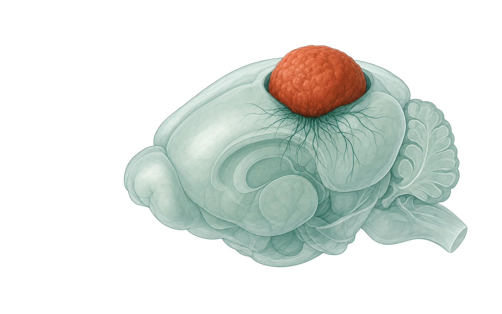
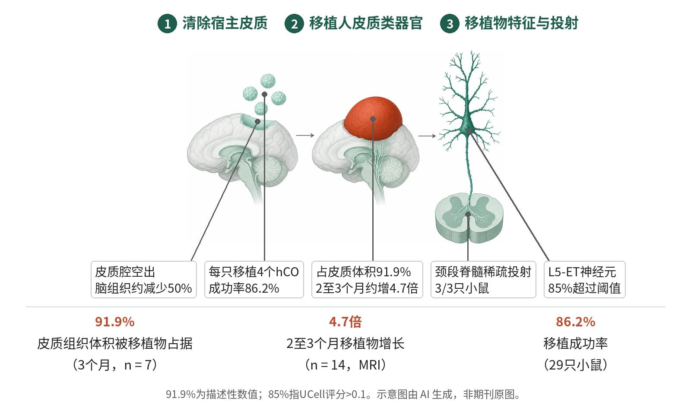

封面示意：绿色小鼠大脑，背侧砖红色圆块寓意类器官。图片由 AI 生成，非原文图片。
在Esco2缺失的免疫缺陷无皮质小鼠中新生期移植4个人皮质类器官，移植物3个月时占皮质组织体积91.9%，2至3个月约增长4.7倍。

- Emx1-cre删除Esco2，清除背侧皮质
- 新生期每只移植4个hCO
- MRI追踪移植物生长与占比
- 检测L5-ET神经元与脊髓投射
- 缺氧后读取CatWalk步态
左：Emx1阳性细胞中删除Esco2使小鼠背侧皮质空缺；中：新生期向皮质腔移植人皮质类器官并生长；右：移植物含L5-ET神经元，并向宿主脊髓发出稀疏投射。示意图由 AI 生成，依据原文结果绘制，非期刊原图，不代表分子比例
研究背景与待解问题
人脑组织难以直接取得，人源干细胞来源的皮质类器官（hCO）可模拟皮质神经发生，但体外缺少环路与行为层面的读出。此前将hCO移植入新生大鼠皮质可促进人神经元整合与成熟，但移植物最多占大鼠一侧皮质的约三分之一。
原文认为，鼠源神经元发育快于人源神经元，快速成熟的宿主环境及既有的大鼠连接可能限制移植物增殖与投射，这对涉及大范围环路失调、行为改变的神经发育疾病建模尤为突出。本研究的切口是先在小鼠中遗传性清除背侧和内侧皮质，再向空出的皮质腔移植hCO。
研究设计
无皮质（apallial）小鼠在免疫缺陷SCID背景下于Emx1表达细胞中删除Esco2（Emx1-cre+/− Esco2fl/fl Prkdcscid/scid），使分裂细胞死亡。无皮质后代占23.4%（n = 91窝，46个繁育笼），与孟德尔25%预期一致；MRI示全脑组织较对照Esco2fl/fl Prkdcscid/scid约减少50%。
5至17日龄（中位10日龄）的无皮质小鼠每侧半球移植2个hCO，每只共4个，来自3株hiPS细胞系，移植后称异种皮质化（XCX）小鼠。对照为同窝Esco2fl/fl Prkdcscid/scid小鼠及移植到完整皮质的局灶移植物。原文称样本量依既往研究经验性估计，且未设计检测性别小效应的效能。
核心结果
主要读出：移植物生长与占比
移植成功率为86.2%（29只小鼠，3株hiPS细胞系），与此前大鼠t-hCO方案一致，提示hCO存活不依赖完整宿主皮质。MRI显示移植物在移植后2至3个月间约增长4.7倍（n = 14，配对t检验，t = 8.219，P = 1.66×10−6）。3个月时移植物占皮质组织总体积的91.9%（n = 7），平均约32,000个神经元/mm3，该占比为描述性数值。
皮质清除程度与L5-ET神经元
全脑snRNA-seq（880,149个核，每组2只）示背侧皮质来源谷氨酸能神经元各类别约七倍减少，嗅球、非皮质及杏仁核、梨状皮质来源类别保留，故“apallial”仅为操作性名称。XCX中85%的第5层颅外投射（L5-ET）神经元UCell评分>0.1，类器官图谱HNOCA中仅213,753个神经元中的3个；XCX的L5-ET比例比既往大鼠与成年小鼠移植高三倍以上。
行为：MoSeq与CatWalk
MoSeq（60个音节，99%方差）提示XCX小鼠位于对照与无皮质之间、更接近无皮质，会话间漂移最大（Kruskal–Wallis P = 0.019；XCX对对照Bonferroni校正P = 0.027），移植未使其正常化。CatWalk跑速无差异（ANOVA P = 0.8467）；摆动时间无皮质组短于对照（P = 0.0019），XCX对对照P = 0.2303；对角爪同步在无皮质与XCX组均改变。
Y迷宫与恐惧条件反射
Y迷宫自发交替中，对照（n = 39，对50%随机水平的单样本t检验P = 2.08×10−7）与XCX小鼠（n = 18，P = 0.0004）高于随机水平，无皮质小鼠（n = 16，P = 0.3016）则否；该效应在相隔数月的两个独立队列中重复。无皮质与XCX小鼠的痕迹恐惧条件反射训练期、线索测试冻结均减少，并有情境冻结缺陷。
缺氧损伤后的细胞与步态读出
XCX与对照小鼠暴露于5% O2 5小时（含1小时渐降期）后，3/3只XCX小鼠的人源移植物可见HIF1α免疫反应，邻近宿主古皮质及同样暴露的对照小鼠则无明显信号。CatWalk中XCX小鼠3至4爪支撑占比较基线增加最多（ANOVA P = 0.0047；对照对XCX P = 0.0120，XCX对无皮质P = 0.0076），而平均速度无变化（P = 0.3845）。
机制解读
原文实验证明：分化后4个月的XCX移植物（hSYN1-GCaMP8s标记）出现全移植物同步钙爆发，持续数十秒、每隔数分钟重复，约100 ms内传播过整个背侧表面；爆发与口面部运动相关（配对t检验P = 0.021，n = 3只），32通道探针记录到沿全长同步出现的LFP爆发（n = 3只）。
3/3只XCX小鼠含VEN样双极或螺旋形细胞，占标记胞体的0.16%，其中位胞体29.8 µm，整体中位为9.251 µm；颈段脊髓在3只XCX小鼠中均见稀疏GCaMP8s+STEM121+人源投射，局灶移植对照与野生型对照脊髓均无信号。
作者推测：作者推测，宿主皮质的遗传性清除可能使L5-ET神经元（含皮质脊髓神经元）得以富集；行为输出可能反映人源移植物与保留的小鼠皮质下环路的相互作用，但移植物是否为特定行为所必需或充分尚不清楚。缺氧后的步态改变可能由后爪接触时间延长、接触面积增大所驱动，这一解释未做因果检验。
局限与不确定
- 移植物最长为分化后177天，24周时转录年龄约相当于二孕期晚期，缺少规范皮质分层、完整区域化、足量GABA能中间神经元和成熟转录谱；作者提出宿主与移植物成熟速度错配可能限制整合。
- 研究未设非皮质类器官移植对照，无法区分皮质谱系效应与一般移植效应；移植物对特定行为是否必需或充分尚不清楚，功能整合需通路特异的记录与操控。
- 全脑snRNA-seq每组仅2只，钙成像与LFP各3只；VEN样细胞仅占0.16%且依形态判断；缺氧行为实验的无皮质组仅雌性（n = 9）；91.9%占比（n = 7）与L5-ET富集倍数均未见统计检验，MoSeq对无皮质与XCX的区分也较弱。
临床/产业意义
若该结果在更多细胞系与更成熟的时间点得到重复，异种皮质化小鼠可为在体评估人源皮质神经元提供一个移植物占皮质组织体积91.9%的平台，并同时读取环路活动与行为。缺氧模型中的步态变化提示，该平台可能用于围产期缺氧及相关神经发育疾病的建模，以及在较大体积的人源皮质组织上检验治疗干预。
作者同时指出，若移植物更成熟，需要尽早建立伦理指导。上述均为小鼠临床前数据，尚无患者层面的验证。